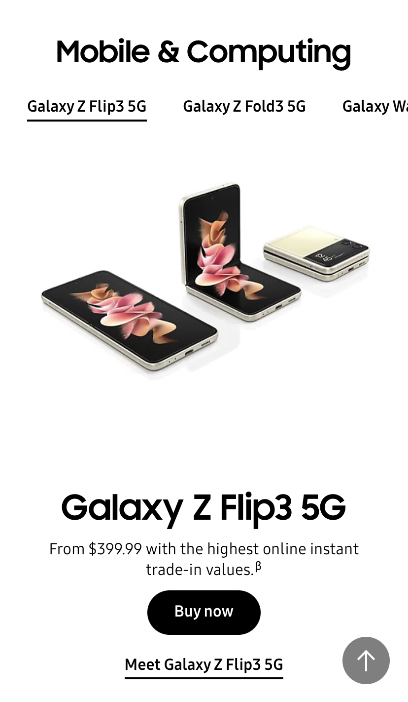
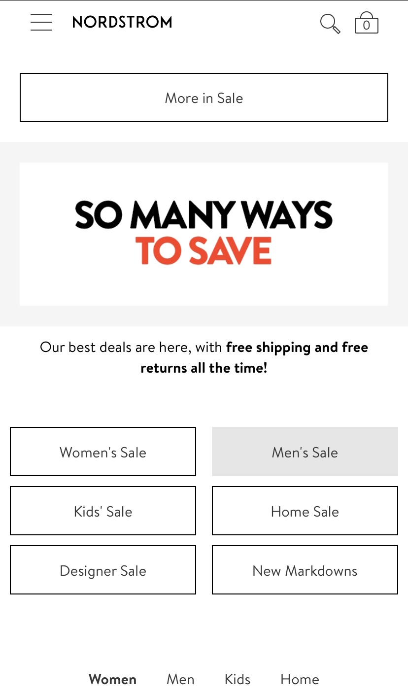
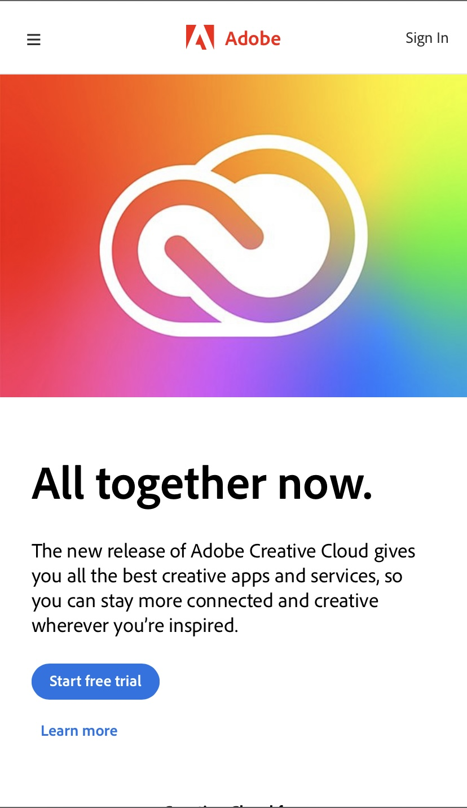

White Space and Clean Design
Samsung
Samsung, much like many other electroncis manufacturers uses White Space amazingly and the targetted audience can easily see the product and some of the obvious features like; camera, screen, size.
Hick's Law
Nordstrom
Nordstrom, like any retailer knows that if it offers users sales, or promotions the likelyhood of that user making a purchase will go up, sometimes the retailers will include a countdown to when these promotions will end.
Fitt's Law
Adobe
Adobe follows Fitt's Law very well because it takes very little time for the user to move the cursor to the "free trial" button thus increasing the chance that the user will be sucked into what the developer had in mind!